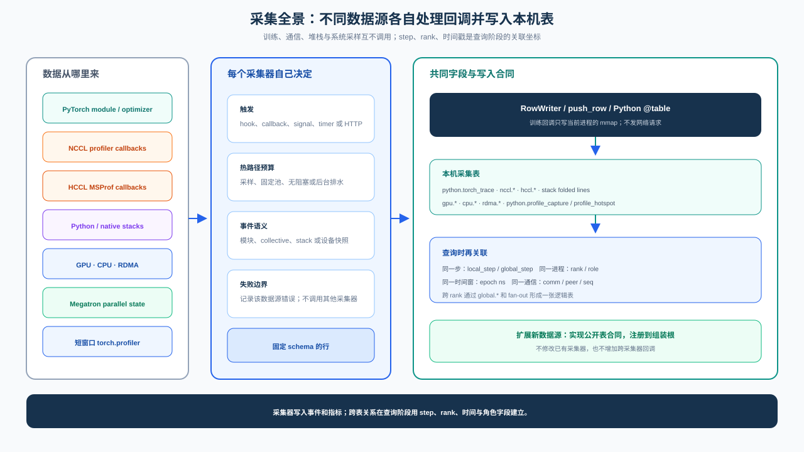
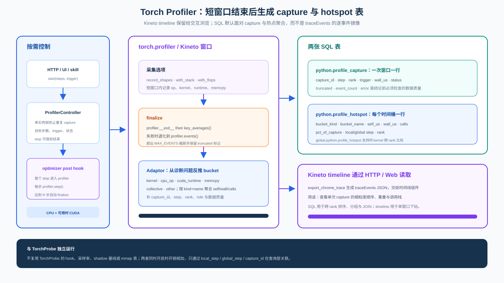
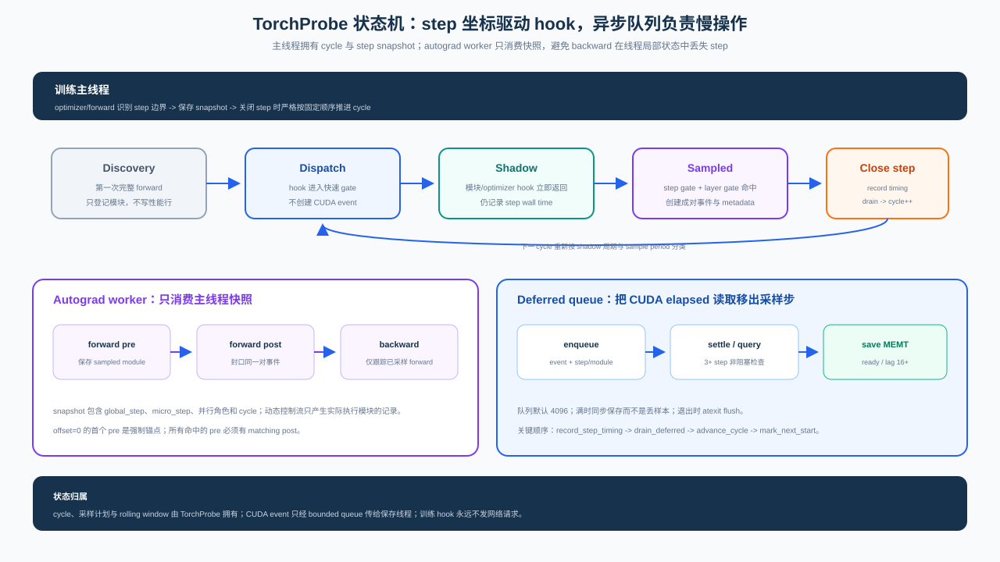
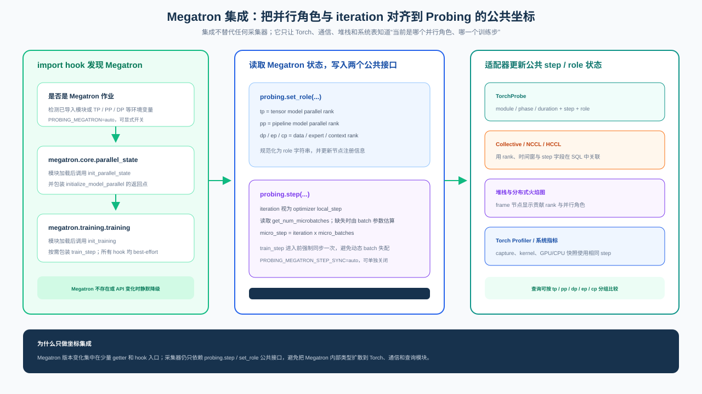
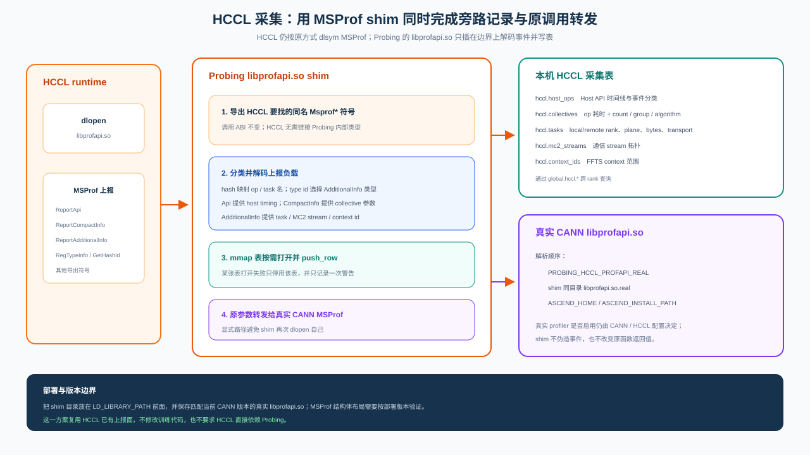
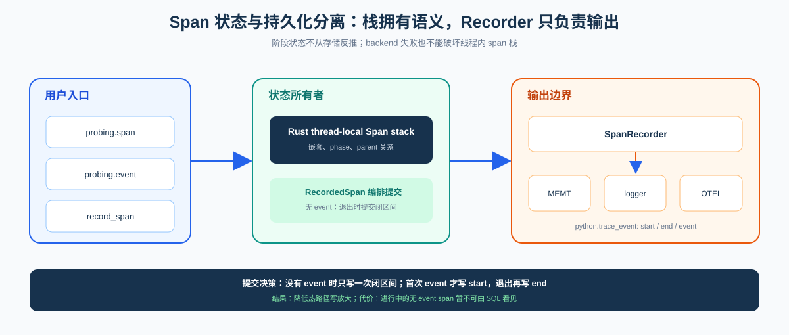

Profiling Architecture¶
Performance analysis is first a cost-allocation problem. Long-running observation requires low, predictable overhead and stable coordinates; deep diagnosis needs dense operator, kernel, and stack events. A single collector cannot optimize for both. Probing therefore separates continuous observation from short-window drill-down and composes their evidence at query time.
System decomposition¶

Collection runs inside the process that owns the data because module hooks, communication callbacks, and runtime stacks are cheapest to observe there. Each collector owns only its state and local tables; collectors do not call one another on hot paths. Version skew, contention, or a failure in one collector therefore does not spread into the training path or another collector.
Independence creates a correlation problem. Probing solves it without a synchronous event bus: facts carry step, rank, time, and parallel-role coordinates, and the query engine reconstructs context across tables and ranks. Coordination cost moves from collection time to query time. This decision is what allows Torch, NCCL, HCCL, stack, and system collectors to evolve independently.
Two observation levels for PyTorch¶
TorchProbe and Torch Profiler coexist because observation depth and sustainable cost conflict. TorchProbe remains active through training and retains step, module, optimizer, and memory facts. It gives up operator detail so its cost can be sampled, measured, and sustained. Torch Profiler uses Kineto over a known anomalous window to collect CPU op, CUDA kernel, runtime, and memcpy events. It yields deeper evidence, but is not a continuous telemetry path.
The paths have incompatible lifetimes, buffers, and failure boundaries, so they are not merged into one state machine. They meet only through shared step/rank coordinates in SQL. The resulting diagnostic progression is deliberate: continuous data narrows the search to a rank, step, and module; a targeted capture then pays for operator and kernel detail. If both run together their costs add, and TorchProbe shadow measurements must not be interpreted as Kineto overhead.
Torch Profiler as a bounded capture transaction¶

ProfilerController permits one capture at a time because Kineto owns process-wide state.
Concurrent sessions would make event ownership, stop, and cleanup ambiguous. The capture advances
at optimizer-step boundaries so windows across ranks can be aligned by training coordinates rather
than by the instant at which a control request arrived.
Aggregation and format conversion happen only after the window closes. This keeps
key_averages(), raw-event traversal, and JSON generation off the training hot path. Finalization
prefers op/kernel aggregates; when aggregation is unavailable it preserves a bounded raw-event
fallback and records truncated explicitly instead of presenting partial data as complete.
One capture produces two representations because machine analysis and human inspection need
different shapes. python.profile_capture and python.profile_hotspot are virtual tables over a
bounded session store, suitable for filtering, aggregation, and cross-rank comparison through
global.python.profile_hotspot. The complete traceEvents structure remains a timeline for the
Web UI. It is not expanded into MEMT rows: copying every event would amplify hot-path writes, while
capture lifetime is fundamentally different from continuous telemetry.
TorchProbe as a long-running step state machine¶

Optimizer hooks define step boundaries, while module hooks record facts within the current step. The main thread advances the state machine, evaluates sampling gates, and records bounded events; CUDA elapsed-time reads and batch preparation move to a deferred queue. Step wall time is fixed before old events are drained, so drain cost is not charged to the step that just ended.
Hook selection follows a minimum-intrusion rule. Forward timing uses module pre/post hooks. Backward timing avoids module backward hooks, which interact poorly with inplace activations, and instead registers tensor grad hooks on forward inputs and outputs. The interval from grad-output ready to grad-input ready approximates the module backward window; when both boundaries cannot be formed, the system does not claim a precise duration.
Sampling has two stages because step density and per-step coverage are independent cost controls.
The step gate is a deterministic, evenly spaced function of the step number, so every rank selects
the same steps. Within a sampled step, a deterministic hash of (step, layer) selects modules.
The default rate=0.05, layer_rate=1.0 retains full module relationships for a small fraction of
steps. Unsampled steps short-circuit at hook entry but still write step wall time, preserving a
continuous trend.
Shadow steps are interleaved at 4:1 by default and bypass TorchProbe hooks. This places the
baseline inside the same training run and workload, reducing environment drift from offline A/B
measurement. The consequence is equally important: it measures only the TorchProbe path. Timing
boundaries, statistical semantics, and confidence gates are defined in the
overhead model.
The continuous path publishes two stable contracts: python.torch_trace for module facts and
python.torch_step_timing for step class and wall time. Column definitions belong in the
SQL table reference; distributed timeline
construction over these local facts is described in
Distributed Profiler query and visualization.
Megatron coordinate integration¶

The Megatron adapter is a coordinate bridge, not another collector. Import hooks watch
megatron.core.parallel_state and megatron.training.training. Once their APIs are available,
the adapter reads TP/PP/DP/EP/CP ranks into probing.set_role(...) and wraps train_step on a
best-effort basis to align Megatron's iteration and micro-batch count with probing.step(...).
This boundary keeps version-sensitive Megatron getters in one adapter. TorchProbe, collective, stack, profiler, and system collectors continue to depend only on the common step/role state and join through SQL. Missing modules or an incompatible Megatron API degrade without blocking the training loop. Runtime controls are documented under Megatron autostart.
HCCL collection through the MSProf boundary¶

On Ascend, HCCL already reports profiling events through libprofapi.so. Probing places an
ABI-compatible shim at that boundary: it exports the expected MSProf symbols, classifies and
decodes ReportApi, ReportCompactInfo, and ReportAdditionalInfo payloads, appends rows to
hccl.host_ops, hccl.collectives, hccl.tasks, hccl.mc2_streams, and
hccl.context_ids, then forwards the original arguments and return value to the real CANN
library.
The real library is resolved from PROBING_HCCL_PROFAPI_REAL, a sibling
libprofapi.so.real, or the configured Ascend installation. A table-open failure disables only
that table; it does not disable forwarding. Because MSProf structure layouts follow the deployed
CANN version, installation must preserve the matching real library and validate the ABI. The
shim never resolves bare libprofapi.so, which would recursively load itself.
Tracing and training phases¶
Tracing owns the coarse training timeline; TorchProbe owns module timing and memory facts. They may correlate on a step, but must not both own forward/backward/optimizer phase spans.
State ownership and persistence¶

The span stack is the sole owner of phase state; persistence is only an output. probing.span
creates a nested scope, probing.event marks the current scope, and record_span submits an
already-closed interval. All three converge on SpanRecorder, keeping memtable, logger, and OTEL
as sinks that cannot feed state back into phase tracking.
probing.span uses deferred close. A span without events becomes one closed interval on exit; the
first event causes a lazy span_start, followed by span_end on exit. This reduces write
amplification for quiet scopes. The tradeoff is explicit: an active span without events is not yet
visible to SQL. That is commit semantics, not missing data.
Training-phase invariants¶
Training has no second global phase variable. phase is always the innermost forward,
backward, or optimizer span; an empty training stack means idle. train.step is the closed
interval for one logical iteration, not a fourth phase. Optimizer exit advances micro_step, and
micro_batches then maps it to local_step, so gradient accumulation does not create false
complete steps.
The resulting invariants are:
- phase state comes from the span stack, not a second global variable;
train.stepstarts at the first forward and ends at optimizer exit across gradient accumulation;- an optimizer exit writes at most one
train.step, and only after a forward; - manual spans, phase hooks, and TorchProbe never duplicate an already-active phase;
- with
micro_batches=k, each k micro steps advance onelocal_step.
Phase ownership belongs to attach_training_phases: it closes forward/backward/optimizer and
submits train.step wall time. TorchProbe detects an existing owner and does not duplicate phase
spans; it publishes only module timing and memory facts. This ownership rule prevents two hook
systems from assigning different meanings to the same training interval.
probing.tracing.SPANS_SQL joins start/end rows into duration_us for querying. See
Core model and Environment variables.
Python Stack Profiling¶
The stack path is divided into StackSnapshot → ParsedStacks → FoldedStacks because asynchronous
signal context cannot allocate, symbolize, or take complex locks. Capture writes only thread/source
flags, native PCs, and pre-interned Python frame keys into fixed storage. Parse reconstructs symbols
and mixed stacks outside signal context; fold then performs fingerprint aggregation and flamegraph
output. On-demand capture and continuous sampling can share the latter stages without coupling their
trigger mechanisms to interpretation.
The eval-frame VM tracer is the only source of Python frames. It interns symbols while holding the
GIL, leaving the signal path to copy keys. On Linux, native frames are filled in place by
SIGPROF/SIGUSR2 handlers running on alternate stacks. On macOS, asynchronous SIGPROF can land in
system SIMD routines and cause SIGILL, so the default is cooperative, rate-limited Python capture
from eval-frame. When an on-demand native stack is required, Mach briefly suspends the target,
copies the PC/frame-pointer chain, resumes it immediately, and symbolizes later. Platform-specific
behavior is therefore confined to capture; parse, merge, and fold stay common.
Continuous sampling uses a bounded ring and two publication buffers. Contention drops and counts a snapshot instead of blocking the training thread. Query and Web paths reuse the latest snapshot rather than signaling a main thread that is already being sampled. Across ranks, each process folds duplicate paths before transfer; the coordinator merges equal paths and records rank coverage. This changes network cost from proportional to raw samples to proportional to distinct call paths, while still allowing a partial, explicitly incomplete result when some ranks fail.
TorchProbe module flamegraphs use the same distributed aggregation idea but retain independent collection state. Module timing and mixed CPU stacks meet only in the query and presentation layers.
Boundary with the other layers¶
System metrics are periodic; Torch, communication, and stack collectors are event-driven. They share coordinates but not scheduler threads. Long-running facts enter columnar probe tables, while retention, hot/cold placement, and cross-rank querying belong to the data and query layers. A collector does not grow a second storage policy. See the table reference and SQL analytics guide for fields and examples, and the overhead model for measurement semantics and invariants.